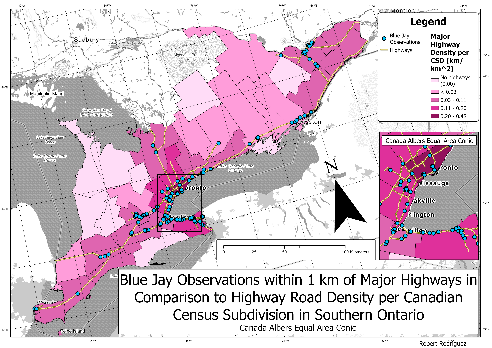
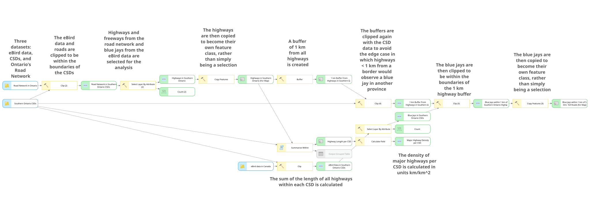

Visited Ontario Municipalities
2026An interactive map tracking the Ontario municipalities I've visited since my 18th birthday, currently at 33 out of 444 within nearly a year. Built in QGIS and exported to the web with qgis2web.
Maps and spatial analysis from my geomatics minor.
An interactive map tracking the Ontario municipalities I've visited since my 18th birthday, currently at 33 out of 444 within nearly a year. Built in QGIS and exported to the web with qgis2web.

Maps Blue Jay observations within 1 km of major highways against highway density by Census Subdivision, in the Canada Albers Equal Area Conic projection for Southern Ontario.
The map compares where Blue Jays are observed with how dense the highway network is across Southern Ontario. The analysis is automated as a ModelBuilder workflow in ArcGIS, so it can be re-run on new data.
